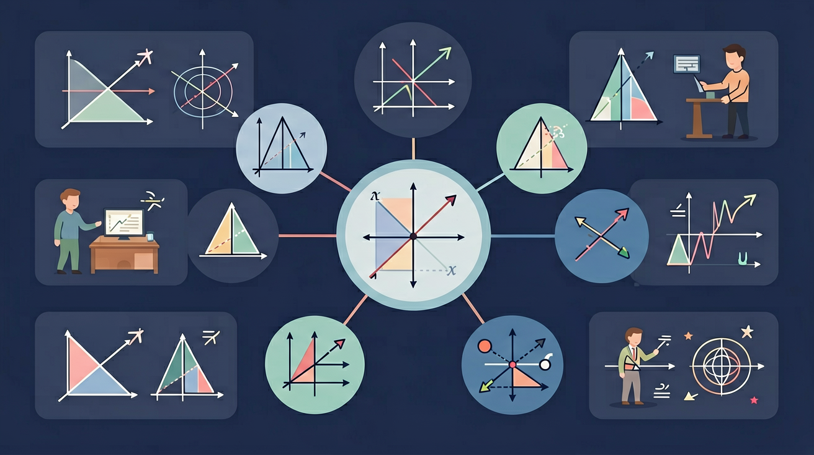

🚕 为什么学一次函数？
用 y=kx 描述"单价 × 数量"这类正比例关系——买苹果、匀速走路，都很好算。
坐出租车，费用不只是"里程 × 单价"——还有一笔起步价！手机话费也不只是"通话分钟 × 单价"——还有月租费！这些用 y=kx 描述不了。
一种新函数：既能表示"按量计费"的部分，又能加上"固定费用"——这就是一次函数 y=kx+b。学会它，你就能给出租车、话费、水电账单建立数学模型。
🎯 学习目标
- 识别：能判断一个函数是否为一次函数，区分一次函数与正比例函数
- 画图：能用两点法画出一次函数的图像
- 理解：能解释 k 和 b 的几何意义，说明它们如何影响图像的位置和走向
- 应用：能用待定系数法求一次函数解析式，建立简单实际问题的函数模型
📋 前置知识检测
2 道小题，帮你确认是否准备好了。答完会给出个性化学习建议。
第 1 题：正比例函数回顾
正比例函数 y=kx（k≠0）的图像是什么形状？过哪个特殊点？
第 2 题：坐标系基础
点 (0, 3) 在坐标系的什么位置？
📖 模块 1：什么是一次函数
📝 一次函数的定义
- k：斜率，决定直线的"坡度"和方向
- b：截距，直线与 y 轴交点的纵坐标
- k ≠ 0 是关键条件——若 k=0，则 y=b 变成常数函数，不是一次函数
💡 记忆锚点：k 是坡度，b 是起点。就像爬山——k 决定坡有多陡，b 决定从哪个高度出发。正比例函数是"不收起步价"，一次函数是"有起步价"。
🔍 一次函数 vs 正比例函数
| 对比项 | 正比例函数 y=kx | 一次函数 y=kx+b |
|---|---|---|
| 条件 | k≠0，b=0 | k≠0，b 为任意实数 |
| 图像 | 过原点的直线 | 直线（不一定过原点） |
| 关系 | 正比例函数是 b=0 时的一次函数（特殊情形） | |
🗳️ 概念检测（ConcepTest）：先投票，再看解析
同桌讨论 30 秒：正比例函数 y=-3x 是一次函数吗？
A. 是 ｜ B. 不是，它们是不同的函数
一次函数的定义是 y=kx+b（k≠0），对 b 没有任何限制——b=0 时 y=kx 仍然满足定义。
所以正比例函数是特殊的一次函数（b=0 的情形），就像正方形是特殊的长方形。这是本课最容易丢分的概念点。
✏️ 立刻练习：判断一次函数
下面哪些是一次函数？
📈 动手探究：拖一拖 k 和 b
GeoGebra 互动实验室
💡 拖动 k 滑块观察斜率变化，拖动 b 观察截距变化，理解两个参数对图像的独立影响。若加载失败，请直接使用下方模块 2 的 Canvas 画板，功能相同。
📖 模块 2：一次函数的图像怎么画
正比例函数 y=kx 的图像是一条过原点的直线，再找一个点就能画出。
一次函数 y=kx+b 不过原点了，怎么画？
用"两点法"：分别令 x=0 和 y=0，找到直线与两个坐标轴的交点，连起来就是。
📝 两点法画图步骤
标准示范：找到两个坐标轴交点，一连即得直线
🎨 交互画板：拖动滑块观察直线变化
拖动滑块改变 k 和 b 的值，观察直线如何变化
📝 学习记录单：图像观察
拖动上面的滑块，填写你的发现：
我观察到：
我的猜想：
k 控制直线的倾斜方向和程度：k>0 从左到右上升，k<0 从左到右下降；|k| 越大越陡。
b 控制直线与 y 轴的交点位置：b>0 交 y 轴正半轴，b<0 交 y 轴负半轴，b=0 过原点。
✏️ 立刻练习：画图
用两点法画 y = 2x - 4 的图像，应选取哪两个点？
📖 模块 3：k 和 b 的秘密
📐 k 决定方向和坡度
- k > 0：直线从左到右上升（上坡 🏔️）
- k < 0：直线从左到右下降（下坡 🎿）
- |k| 越大：直线越陡
💡 记忆口诀：k 是坡度——正数上坡，负数下坡。手指从左往右划，k>0 手指往上抬，k<0 手指往下落。
📍 b 决定起点位置
- b > 0：直线与 y 轴交于正半轴（原点上方）
- b < 0：直线与 y 轴交于负半轴（原点下方）
- b = 0：直线过原点——就是正比例函数
⚠️ 常见错误：b 是"纵截距"，不是与 x 轴的交点！令 x=0 得 y=b，所以交点是 (0,b)。
🎨 交互：k 和 b 的符号与象限
调整 k 和 b，观察直线经过哪些象限
✏️ 纠错练习
小明说："y=-2x+3 的图像从左到右上升，与 y 轴交于 (3,0)。"他说对了吗？
📖 模块 4：用待定系数法求解析式
你已经理解 k 和 b 怎么影响图像。
如果只告诉你直线经过哪两个点，你能反推出 y=kx+b 的具体表达式吗？
学会"待定系数法"——设出 k 和 b，代入已知点，解方程组就能确定。
📝 待定系数法四步
📝 例题：已知直线过 (1, 5) 和 (3, 9)
代入 (3,9)：3k + b = 9 …②
代入①：2 + b = 5，所以 b = 3
⚠️ 常见错误：两个方程相减时符号搞错。建议用"上减下"统一方法，仔细处理符号。
✏️ 递进练习 ① ⭐ 全支架
直线过 (2, 7) 和 (4, 11)，填写过程：
设 y = kx + b
代入 (2,7)：2k + b = ___ …①
代入 (4,11)：___k + b = ___ …②
② - ①：___k = ___ → k = ___
代入①：b = ___ → y = ___
✏️ 递进练习 ② ⭐⭐ 半支架
直线过 (1, -1) 和 (3, 5)，自己写出完整步骤。
提示：设 y = kx + b，分别代入两点，解方程组。
✏️ 递进练习 ③ ⭐⭐⭐ 独立完成
直线过 (-2, 4) 和 (1, -5)，求解析式。
🌍 迁移应用：出租车计费
某城市出租车起步价 10 元（3 公里内），超过 3 公里后每公里 2.5 元。
问题：写出车费 y（元）与里程 x（公里，x≥3）的函数关系式。
提示：起步价相当于 b，每公里费用相当于 k。

📝 学习记录单：建立函数模型
我的分析：
所以 y = 2.5(x-3) + 10 = 2.5x + 2.5（前 3 公里已含在起步价中）
🔍 深层理解：一次函数的五镜头
📷 镜头一 · 拆开它：y = kx + b 里到底装着什么？
k 是"变化的快慢"（斜率），b 是"出发的位置"（截距）。把它拆成两句大白话：b 决定直线从哪儿起步，k 决定它爬坡还是下坡、有多陡。这就是 y = kx + b 的本质。
📷 镜头二 · 解释它：为什么 k 相同的两条直线一定平行？
斜率 k 表示"x 每增加 1，y 增加多少"。两条直线 k 相同，意味着它们以完全相同的速度变化——永远差一个固定的 b 值，所以永不相交。这就是"平行 ⟺ k₁ = k₂"背后的原理。
📷 镜头三 · 比较它：一次函数 vs 正比例函数
正比例函数 y = kx 是 b = 0 的特例——图像必过原点。一次函数只是把这条过原点的直线沿 y 轴平移了 b 个单位。理解了"平移"，两个概念就合并成了一个。
📷 镜头四 · 迁移它：打车计费里的一次函数
打车费 = 起步价 + 每公里单价 × 里程。起步价就是 b，每公里单价就是 k。凡是有"固定底数 + 均匀变化"的场景，都是一次函数：水费、手机套餐、弹簧伸长……
📷 镜头五 · 看见它：从表格到图像的双向翻译
给一组 (x, y) 数据，先算"变化量之比" Δy/Δx：若恒定，就是一次函数——这是把表格翻译成解析式的本领；反过来，看见 k 为负就能立刻想象直线"下坡"——这是把解析式翻译成图像的本领。双向翻译，才算真懂。
🏆 综合任务
⭐ 基础巩固（必做）
1. 判断 y=-x+3 是否为一次函数。若是，指出 k 和 b 的值。
2. 画出 y=-x+3 的图像（用两点法）。
⭐⭐ 拓展应用（选做）
一次函数 y=kx+b 的图像经过点 (0, -2) 和 (3, 4)：
① 求函数解析式；② 判断点 (6, 10) 是否在该函数图像上。
⭐⭐⭐ 创新挑战（选做）
手机套餐 A：月租 20 元，通话 0.1 元/分钟；套餐 B：无月租，通话 0.3 元/分钟。
① 分别写出两种套餐的月费与通话时间的关系式；
② 通话多长时间时两种套餐费用相同？
③ 什么情况下选 A 更划算？什么情况下选 B 更划算？
📝 后测
3 道题检验学习效果，答完生成结课报告。
第 1 题
一次函数 y=kx+b 中，k<0、b>0 时，图像经过哪些象限？
第 2 题
一次函数过点 (1,5) 和 (3,9)，求解析式。
第 3 题
小明说 y=2x²+1 是一次函数，对吗？
📌 课堂小结
核心知识回顾
- 定义：y = kx + b（k ≠ 0），k 决定方向和坡度，b 决定与 y 轴的交点
- 图像：一条直线，用两点法画出——取 (0, b) 和 (-b/k, 0)
- k 的意义：k > 0 上升，k < 0 下降；|k| 越大越陡
- b 的意义：b 是纵截距，令 x=0 得 y=b，交点 (0, b)
- 待定系数法：设→代→解→写，四步求解析式
- 记忆锚点：k 是坡度，b 是起点；正比例不收起步价，一次函数收起步价
🚀 迁移挑战（Bloom 创造级）
设计一个实验测量水龙头流水速度，要求：
- 建立水位高度与时间的函数关系
- 分析斜率对应的物理意义
- 探究不同开度对斜率的影响
📝 真题练习
先独立作答，再点选项查看对错与错因。
选择题 1
A运营商的收费函数为y=5x+30，其中x表示超出流量（GB），y表示总费用（元）。当小明使用8GB流量时，总费用是多少？
选择题 2
B运营商的收费函数为y=3x+50，其中x表示超出流量（GB），y表示总费用（元）。当小明使用12GB流量时，总费用是多少？
选择题 3
小明每月使用的流量在多少GB以下时，选择A运营商更划算？
填空题 1
A运营商的收费函数为y=5x+30，其中x表示____（GB），y表示____（元）。
查看答案与解析
答案：超出流量，总费用
根据题意，x表示超出5GB的部分，y表示总费用
填空题 2
B运营商的收费函数为y=3x+50，其中x表示____（GB），y表示____（元）。
查看答案与解析
答案：超出流量，总费用
根据题意，x表示超出10GB的部分，y表示总费用
💡 概念检测（互动）
一次函数y=kx+b中，k和b分别表示什么？
🔬 比较两家运营商的收费方案
请分析两家运营商的收费函数，并绘制函数图像，比较不同流量使用情况下的费用变化